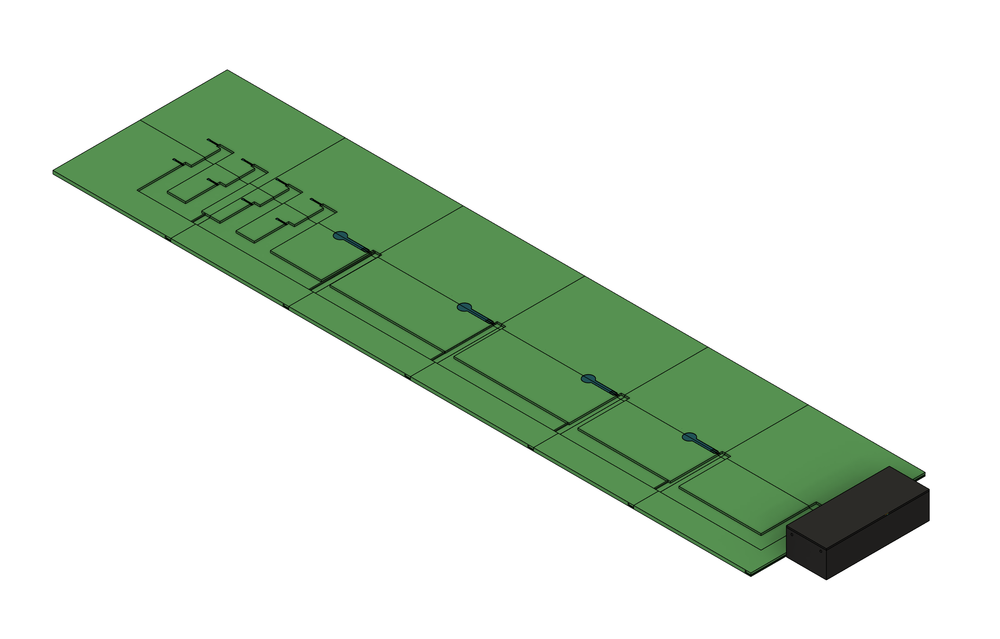
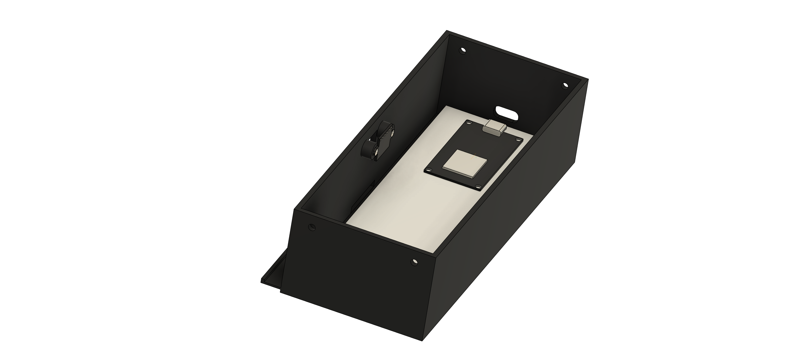

300 yards or six feet, it still counts as One Stroke.
Sam Sentany
Founder & Product Developer
Fall 2026
MEET THE FOUNDER
Sam Sentany.
Mechanical Engineering | Class of 2029
Purdue University
Combining my passion for engineering,
entrepreneurship and golf to develop a
better way to practice your golf game.
ENGINEERING EXPERIENCE
Peerless Pump
Mechanical Engineering Intern
Summer 2026
V2X
Mechanical Engineering Intern
Incoming | Summer 2027
samsentany.com
01 / THE PROBLEM
Golfers practice. But are they improving?
300 yards
A drive down the fairway.
6 feet
A putt on the green.
Both count as one stroke.
Traditional at-home putting practice often provides little information beyond whether the ball went in.
02 / CUSTOMER SEGMENT
Built for the recreational golfer.
PRIMARY CUSTOMER
The golfer who wants to improve at home.
Already invests in golf equipment, plays regularly, and wants more useful practice without purchasing professional-grade technology.
User and buyer are the same person
SECONDARY CUSTOMER
Coaches and commercial facilities.
Different purchasing decisions, budgets, accuracy requirements and existing training methods.
Secondary customer segment with opportunities for future expansion.
Job to be done: Help me understand whether my putting is improving when I practice at home.
03 / CUSTOMER DISCOVERY
What golfers actually told me.
“
I currently use a golf simulator, but I can't putt effectively on the simulator.
RECREATIONAL GOLFER
“
I have a putting mat, but it just rolls and it gets boring and doesn't tell me anything.
RECREATIONAL GOLFER
“
We don't see enough value in it to justify replacing the cheap putting gates we currently use.
GOLF COACH — QUOTE EXCERPT
10+
Recreational golfer conversations, supplemented by coach and competitive golfer feedback.
All 10 recreational golfers pitched to already own
golf performance technology and expressed interest
in a dedicated putting simulator.
04 / PROBLEM VALIDATION
My assumptions changed.
01
I thought.
More putting data would automatically make the product more valuable.
02
I heard.
Golfers want useful feedback, but they also want a reason to continue practicing.
03
I now think.
Affordable measurement should be the core value, with engagement supporting repeat use.
The goal is not more data. The goal is more useful practice.
05 / VALUE PROPOSITION
Introducing One Stroke.
An affordable smart putting mat designed to make at-home practice measurable.
01 Immediate putting feedback
02 Compact, modular construction
03 Accessible target price
$150
TARGET RETAIL PRICE

First-iteration sensor-layer CAD — not final product
06 / COMPETITIVE LANDSCAPE
Between basic mats and premium technology.
ProductPricePrimary value
Traditional putting mat~$30+Basic putting practice
One Stroke$150Affordable measurable practice
ExPutt~$469Advanced putting simulation
PUTTR~$599–699Connected putting practice
68%
Lower target price than the $469 benchmark.
The trade-off
Fewer initial features in exchange for affordability and simplicity.
07 / INDUSTRY MOMENTUM
Golf is growing beyond the course.
48.1M
Golf participants
Americans participating in golf during 2025.
29.1M
On-course golfers
Traditional golf participation in the United States.
19M
Off-course only
Participants at ranges, simulators and other golf venues.
60.5% On-course
39.5% Off-course only
Golf is increasingly accessible outside traditional golf courses.
Source: National Golf Foundation, Golf Industry Facts, 2026.
08 / TOP-DOWN MARKET SIZING
A growing market. A focused entry point.
GLOBAL INDOOR PUTTING MARKET$486.2M
NORTH AMERICAN MARKET$187.7M
EST. NORTH AMERICAN RESIDENTIAL$117.1M
INITIAL SALES MILESTONE$150K
5.8%
Projected annual market growth.
$486.2M
2025
$812.5M
2034
$187.7M × 62.4% = $117.1M
1,000 units × $150 = $150,000
Source: Dataintelo, Indoor Golf Putting Green Market, May 2026. Regional residential estimate assumes the global residential revenue share applies to North America. Initial sales milestone is a planning hypothesis.
09 / BOTTOM-UP MARKET SIZING
Our target customers already invest.
5 OF 10 GOLFERS
$700
Rapsodo MLM2PRO
Combined equipment value: $3,500
2 OF 10 GOLFERS
$489.50
Garmin Approach R10
Combined equipment value: $979
1 OF 10 GOLFERS
$5,000
Garmin Approach R50
Combined equipment value: $5,000
2 OF 10 GOLFERS
$129.98
Rapsodo Mobile Launch Monitor
Combined equipment value: $259.96
$9,738.96
Combined equipment reference value
$973.90
Average equipment value per golfer
10/10
Expressed interest in One Stroke
Initial customer discovery: 10 recreational golfers
within my personal network who represent One Stroke's
target customer profile.
10 / BUSINESS MODEL
A simple purchasing decision.
ONE-TIME HARDWARE PURCHASE
$150
Target price per One Stroke system.
No required subscription at launch
Who pays?
The recreational golfer purchasing the product for personal use.
What are they buying?
A compact putting system with accessible performance feedback.
How do we sell it?
Direct-to-consumer demonstrations and online sales.
Prove the hardware creates value before introducing recurring revenue.
11 / FINANCIAL FEASIBILITY
Can a $150 product make money?
TARGET UNIT ECONOMICS
01
Retail price: $150
02
Manufacturing and assembly target: $65
03
Fulfillment, fees and support: $20
$65
Contribution per unit
43.3% contribution margin before customer
acquisition and fixed expenses.
MANUFACTURING COST SENSITIVITY
01
$65 manufacturing — $65 contribution
02
$85 manufacturing — $45 contribution
03
$100 manufacturing — $30 contribution
04
$130 manufacturing — $0 contribution
Higher manufacturing costs directly reduce
contribution and the ability to acquire customers.
PILOT PRODUCTION
100
Units — manufacturing quote required.
EARLY PRODUCTION
500
Units — manufacturing quote required.
SCALED PRODUCTION
1,000
Units — manufacturing quote required.
The $65 manufacturing target must be achievable
at realistic early production volumes,
not only at scale.
12 / GO-TO-MARKET STRATEGY
Start with ten customers. Not ten thousand.
01
Connect
Purdue golf community and recreational golfers.
02
Demonstrate
Hands-on product demonstrations.
03
Convert
Paid orders at the target price.
04
Learn
Track usage, feedback and referrals.
1–2 weeks
Hypothesized first-contact-to-purchase cycle.
10
Initial paying customers before broader expansion.
13 / ENGINEERING DEVELOPMENT
Moving beyond the idea.
Recessed sensor locations
Modular base panels
Integrated wire routing
External controller housing
A proof-of-concept platform designed to test individual engineering solutions.
14 / MECHANICAL DESIGN
Designed to be tested and modified.
Putting turf
EVA foam layer
Removable 3M Dual Lock
Sensor layer and wiring channels
Modular structural base
Conceptual layer architecture — not to scale
Removable putting surface
The turf and foam assembly can be detached to access the electronics.
Modular construction
Individual panels allow changes without rebuilding the entire prototype.
Integrated sensor recesses
Provide locations for evaluating sensor placement and wiring.
15 / ELECTRONICS AND SENSING
Three sensing technologies to evaluate.
Hall-effect sensors
Investigate putter position, stroke timing and motion using magnetic detection.
Magnetic field
Time-of-flight sensors
Investigate ball position, travel and speed measurement.
Distance sensing
Pressure sensors
Explore contact detection and whether useful impact information can be obtained.
Contact sensing
Original component CAD models. Intended sensing functions are hypotheses, not validated measurement capabilities.
16 / CONTROL SYSTEM
From physical motion to useful feedback.

Original controller enclosure design
ESP32 microcontroller
Sensor acquisition, processing and wireless communication.
USB-C breakout board
Planned external power and connectivity interface.
One Stroke customer discovery interviews, Purdue Club Golf feedback, course instructor feedback, original Fusion CAD models and prototype bill of materials. Fall 2026.